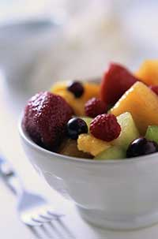

Of the many issues facing Americans today, few are moreimportant than the quality and safety of our food. Every day, manyeat more and more processed, high-calorie foods with littlenutritive value, trucked to us from thousands of miles away.
Why? Because those foods are more affordable. And why are theymore affordable, considering all the processing, packaging andtransportation? Because the companies that produce them receivefinancial assistance from us in the form of subsidies authorized bythe U.S. farm bill. Over the past decade, U.S. citizens paid morethan $165 billion in tax dollars to the largest 20 percent offarms, according to the EnvironmentalWorking Group. These farms operate on such a massive scale thatlimited attention can be focused on maximizing the health benefitsof their product, and contamination is often unavoidable. (Learnmore about subsidies and the unhealthy effects of current U.S. farmpolicy inHow Farm Policy Affects Us All.)
The results are clear?those on low and middle income budgetshave little choice but to stock up on foods that are typically fullof preservatives, high-fructose corn syrup andsodium. An obesity epidemic is well underway, and food-borneillness outbreaks make frequent headlines. TheU.S. Departmentof Agriculture is funding the foods they advise us to usesparingly (oils and sweets), while leaving fruits and vegetablesout even though they recommend five to nine daily servings of thosetwo items combined.
Support for local organic family farms is the key to reversingthese unhealthy trends. You'll benefit from fresh, preservative-and chemical-free products, and by shopping close to home, you'lldo your part to reduce the amount of carbon dioxide generated bytransporting food across the country. (More on the advantages oflocal food can be found inGrowing Trust andHow to Find the Best Food.)
As you read this, the House ofRepresentatives is crafting the 2007 farm bill, which willreplace the 2002 bill that is set to expire September 30. They areallocating funds and determining how your taxes will be spent, andthey need to know that although less than 2 percent of the U.S.population now farms, we all eat ? and we want healthy food. Youcan keep an eye on the latest farm bill developments atwww.farmpolicy.com.
Already, funding has been slashed for valuable programs such asthe National SustainableAgriculture Information Service. Better known as ATTRA, this isan excellent resource that provides sustainable agriculture andorganic farming news; events and funding opportunities; andpublications on production practices, innovative marketing andorganic certification. On June 4, Rep. Collin Peterson (D-Minn.),chairman of theHouseCommittee on Agriculture, gave his opinion of the 255,000farmers with 10 acres or less: 'They're not real farmers. They'recity people.'
Want to help? Talk to your representatives. You can find theircontact info at www.house.gov.Let us know how they respond by posting a comment below.
|
 Though they receive no support from the federal government, organic fruits and vegetables are an integral part of any healthy diet. |
|
|